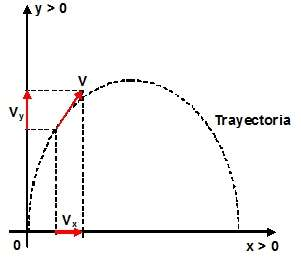

Solución
Primero calculamos la componente vertical de la velocidad (vy):
sen α = vy/v
vy = v·(sen α)
vy = (400 m/s)·sen 60°
vy = (400 m/s)·0,866
vy = 346,41 m/s
En el tiro parabólico, el movimiento sobre el eje "y" es igual que en el "Tiro vertical", y valen todas sus ecuaciones.
Para calcular la altura máxima, debemos considerar que ocurre cuando la velocidad en "y" se hace "cero", es decir que la velocidad final será cero:
vf = 0 m/s
La velocidad inicial es la calculada anteriormente (vy = 346,41 m/s).
Podemos aplicar la fórmula (para el eje "y"):
vf² = v0² + 2·g·Δy
0² = v0² + 2·g·Δy
-v0² = 2·g·Δy
Δy = -v0²/2·g
Δy = -(346,41 m/s)²/[2·(-10 m/s²)]
-----------------------------------------------------------------------
Δy = 6000 m
-----------------------------------------------------------------------